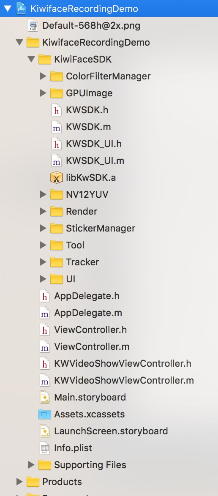
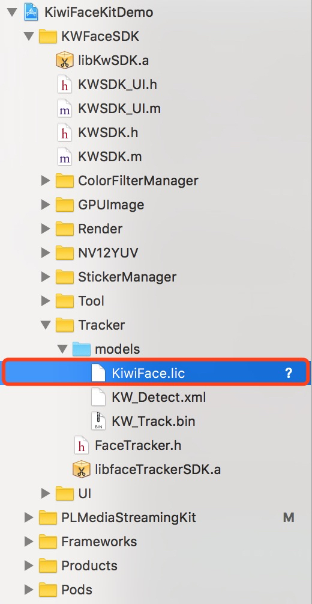
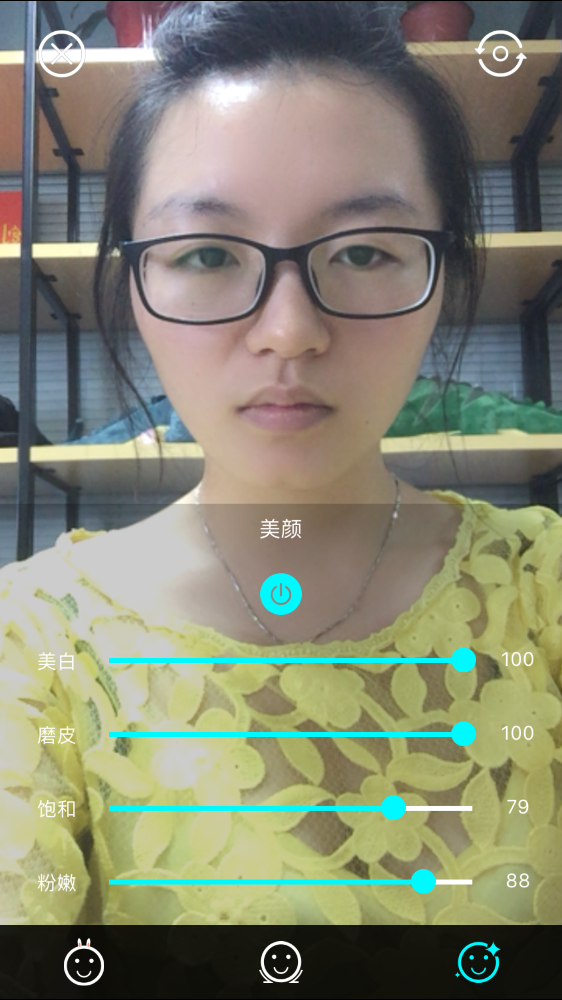
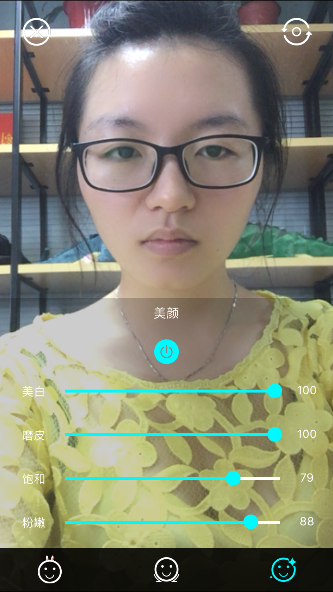

kiwi人脸跟踪SDK，主要功能包括：
我们的SDK针对移动端，在算法效率、硬件占用、性能精度等方面进行了相关优化，使其适用于移动端直播，美颜相机，滤镜相机，趣味贴纸，虚拟美妆等应用场景。

这个文档将演示如何利用我们的demo快速入门，并详细描述具体集成步骤。
该demo基于GPUImage的短视频录制，实现了在短视频录制的场景下实现人脸跟踪以及趣味贴纸。
软件 * XCode 6.0 或以上版本 * iOS 7.0 或以上版本
硬件 * 支持语音/视频的真机设备
用XCode打开demo工程文件(KiwifaceRecordingDemo)。代码包含以下目录结构

添加license文件

选中项目，点击 "Build and Run" 按钮进行编译
示例截图
 |  |
|  |
p.s. 该示例只支持在真机上实现功能，不支持模拟器。编译完成后，即可运行。
软件 * XCode 6.0 或以上版本 * iOS 7.0 或以上版本
硬件 * 支持语音/视频的真机设备
kiwi提供（请从sdk文件夹中获取）
自行下载（若项目中已经存在则不需要下载）
必选：
可选： * libyuv (sdk视频帧的渲染暂时只支持NV21格式的传入，如果应用视频帧是YUV或者其他视频流类型，需要导入视频流格式的转换类) https://github.com/lemenkov/libyuv.git
系统库 （xcode自带）
直接将KiwiFaceSDK文件夹拖入项目中即可,选择Create groups.(SDK中自带GPUimage.a,使用GPUImage短视频录制必须使用Demo中的GPUImage.a,其他则不需要)
导入opencv3.framework
注意，从官网下载的包有可能被错误的命名为opencv2.framework。
如果有需要，请配置贴纸。贴纸相关资源文件存放在stickers目录下，一套贴纸对应一个目录，每套贴纸包含一个config.json文件，其中配置了音效文件名及每个item参数等信息。其结构如下：
|--[sticker_1] （贴纸1）
| |--config.json （贴纸配置文件）
| |--[audio]（音频文件）
| |--[item_1]（贴纸序列图文件夹1）
| | |--[frame_1]（贴纸序列图1）
| | |--[frame_2]（贴纸序列图2）
| | |--...
| | |--[frame_n]（贴纸序列图n）
| |--[item_2]（贴纸序列图文件夹2）
| |--...
| |--[item_n]（贴纸序列图文件夹n）
|--[sticker_2]（贴纸2）
|--...
|--[sticker_n]（贴纸n）
|—stickers.json（总配置文件）程序靠读取在StickerManager文件夹下的stickers.json显示相应的贴纸和图标。
注意，使用贴纸云，需要在Info.plist中加入App Transport Security Settings字段，并将Allow Arbitrary Loads设置为YES。 具体的json文件格式如下：
stickers.json
| 参数名称 | 意义 |
|---|---|
| name | 贴纸的名称（UI显示和贴纸的识别） |
| dir | 贴纸存放路径文件夹名称 |
| category | 类别（贴纸类型的区分或分组） |
| thumb | 贴纸图标的文件名（与声音在同一文件夹下） |
| voiced | true（有声音）false（没有声音播放） |
| downloaded | 是否已经下载。如果没有下载，程序则可以去下载到指定目录后更改该状态 |
config.json
| 参数名称 | 意义 |
|---|---|
| type | 贴纸显示的位置类型（脸部、全屏） |
| facePos | 贴纸在脸部的位置 |
| scaleWidthOffset | 贴纸宽度缩放系数 |
| scaleHeightOffset | 贴纸高度缩放系数 |
| scaleXOffset | 贴纸在脸部水平方向偏移系数 |
| scaleYOffset | 贴纸在脸部垂直方向偏移系数 |
| alignPos | 边缘item参数 |
| alignX | 边缘水平方向偏移系数 |
| alignY | 边缘垂直方向系数 |
| frameFolder | 贴纸资源目录（包括一组图片序列帧） |
| frameNum | 帧数（一组序列帧组成一个动画效果） |
| frameDuration | 每帧的间隔（秒） |
| frameWidth | 图片的宽 |
| frameHeight | 图片的高 |
| trigerType | 触发条件，默认0，始终显示 |
编写config.json文件可使用我司提供的贴纸配置网站进行调试生成。
如果有需要，请配置滤镜。滤镜相关资源文件存放在filter目录下，一套滤镜对应一个目录，每套滤镜包含filter.png（滤镜lookUpTable）和thumb.png（滤镜icon）文件。其结构如下：
|--[filter_1] （滤镜1）
| |--filter.png （滤镜lookUpTable）
| |--thumb.png（滤镜icon）
|--[filter_2]（滤镜2）
| |--thumb.png（滤镜icon）
|--...
|--[filter_n]（滤镜n）
|—filters.json（滤镜配置文件）注意：资源文件里有filter.png（lookUpTable）图片的是单层滤镜。
程序靠读取在filter文件夹下的filters.json显示相应的贴纸和图标。
具体的filters.json文件格式如下：
| 参数名称 | 意义 |
|---|---|
| name | 滤镜的名称（UI显示和滤镜的识别） |
| dir | 滤镜存放路径文件夹名称 |
| category | 类别（滤镜类型的区分） |
如果直接使用我们SDK内置的UI, 可以在页面的viewDidload里面初始化SDK。
//1.创建 KWRenderManager对象 指定models文件路径 若不传则默认路径是KWResource.bundle/models
self.renderManager = [[KWRenderManager alloc] initWithModelPath:self.modelPath isCameraPositionBack:NO];
//2.KWSDK鉴权提示
if ([KWRenderManager renderInitCode] != 0) {
UIAlertView *alertView =
[[UIAlertView alloc] initWithTitle:[NSString stringWithFormat:@"KiwiFaceSDK初始化失败,错误码: %d", [KWRenderManager renderInitCode]] message:@"可在FaceTracker.h中查看错误码" delegate:self cancelButtonTitle:@"取消" otherButtonTitles:@"确定", nil];
[alertView show];
return;
}
//3.加载贴纸滤镜
[self.renderManager loadRender];
//4.初始化UIManager
self.UIManager = [[KWUIManager alloc] initWithRenderManager:self.renderManager delegate:self superView:self.view];
//5.如果使用内置UI 该属性是判断是否清除原有项目的页面UI 如果原有UI功能少 可以用内置UI 替代 一般来说用不到
self.UIManager.isClearOldUI = NO;
//6.创建内置UI
[self.UIManager createUI];
/* 渲染视频帧，在每一帧视频代理函数中调用 */
[KWRenderManager processPixelBuffer:pixelBuffer]
/*
最大跟踪人脸个数
default:4
1 <= maxFaceNumber <= 5
*/
self.renderManager. maxFaceNumber = 5;人脸关键点和贴纸：
self.pointsRender = [[KWPointsRenderer alloc]init];
self.stickerRender = [[KWStickerRenderer alloc]init];//调用描点
[self.renderer addFilter: self.pointsRender];
//调用贴纸
[self.renderer addFilter: self.stickerRender];哈哈镜：
self.distortionFilters = @[
//方脸
[SquareFaceDistortionFilter new],
//ET脸
[ETDistortionFilter new],
//胖脸
[FatFaceDistortionFilter new],
//蛇精脸
[SlimFaceDistortionFilter new],
//梨脸
[PearFaceDistortionFilter new]
];//调用哈哈镜
[self.renderer addFilter:self.currentDistortionFilter];//去除哈哈镜
[self.renderer removeFilter:self.currentDistortionFilter];美颜：
//大眼瘦脸滤镜
self.smallFaceBigEyeFilter = [[SmallFaceBigEyeFilter alloc]init];
//美颜滤镜
self.beautyFilter = [[KWBeaytyFilter alloc]init];//调用美颜
[self.renderer addFilter: self.beautyFilter]; //去除美颜
[self.renderer removeFilter: self.beautyFilter];全局滤镜：
//调用美颜
[self.renderer addFilter:self.currentColorFilter]; 去除具体功能：
//去除美颜
[self.renderer removeFilter: self.beautyFilter];
//去除描点
[self.renderer removeFilter: self.pointsRender];
//去除哈哈镜
[self.renderer removeFilter:self.currentDistortionFilter];
//去除滤镜
[self.renderer removeFilter:self.currentLookupFilter];
//去除贴纸
[self.stickerRender setSticker:nil];增加特定滤镜，进行渲染：
在 sdk入口类中，有一个类型为KWRenderer的渲染类，由他来控制滤镜的增加。
[KWRenderManager.KWRenderer addFilter: GPUImageOutput<GPUImageInput, KWRenderProtocol> *];滤镜对象必须遵守GPUImageInput和KWRenderProtocol两个协议才能正常被人脸捕捉和渲染。
删除特定滤镜，停止渲染：
[KWRenderManager.KWRenderer removeFilter: GPUImageOutput<GPUImageInput, KWRenderProtocol> *];人脸捕捉之后，在渲染视频帧之前可以对每一帧图像做自定义处理的回调block：
typedef void (^RenderAndGetFacePointsBlock)(unsigned char *pixels, int format, int width, int height,result_68_t *p_result, int rstNum, int orientation,int faceNum);
//block属性
@property (nonatomic, copy)RenderAndGetFacePointsBlock kwRenderBlock;block 回调用于在人脸捕捉之后，渲染之前，可以对视频帧进行自定已处理的接口。Block的3个参数可供处理和使用：
我们建议在离开页面的时候释放内存
[self.renderManager releaseManager];